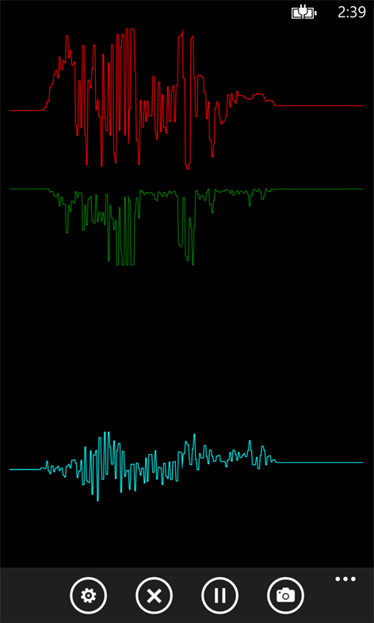

Seismograph App
I built a simple app called Seismograph to visualize the accelerometer data on my phone. The reason I built this is because I wanted a simple way to check the vibration of the motors on my quadrocopter. I saw some really nice apps for android, but all the windows phone accelerometer apps were crap. So I built my own :-)
I then ported this Seismograph for Windows RT so I could also run it on my Surface device. When I did that port I discovered that the same approach to graphing the data didn’t work well on a bigger screen, it slowed down way too much. So I had to re-implement the scrolling graph control. Previously I was building a new PathFigure with the new points scaled to fit the screen, and so each frame was a new Path object and that’s how it would scroll across the screen. Turns out the performance is a lot better if I reuse the PathFigure and only add to the Path object and never remove any points, and rarely re-scale the points. But in order to scroll then I needed to adjust the canvas position of the path to the left, well turns out I can do the scrolling at a higher rate than the point adding which results in a very smooth scroll which looks great. The problem is I would run out of memory if I never removed points, so what I do is cycle two Path objects, when one is completely offscreen on the left, I recycle it and use it on the right, and this is how I get really nice performance on the Surface. So I back ported that to the phone and it looks great there too.

Privacy Policy
The app records the accelerometer sensor data so that you can choose to save it locally on your device either in a bitmap image or in an XML file. The app does not send your data anywhere else, so the data is not shared with anyone. You can choose to send the bitmap image or the XML file to someone else, but that is up to you. The app does not even know if you have shared your data with anyone.